Drone Delivery: автономная доставка грузов
- Грузовые БПЛА, док-станции и единое ПО — доставка туда, куда не идёт транспорт.
- Полезная нагрузка до 30 кг, рейсы по расписанию и полный учёт каждого груза.
Скорость доставки
×10 к наземному маршруту

ROUTE: BVLOS
MODE: AUTO
Последняя миля обходится дороже всего маршрута
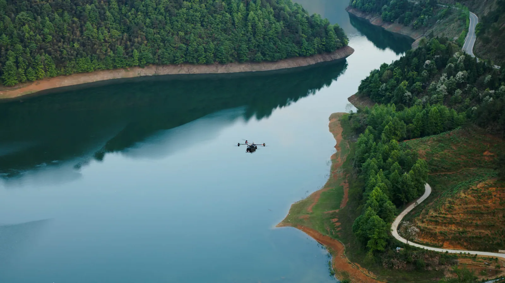
Горы, каньоны и реки: объезд занимает часы вместо минут.
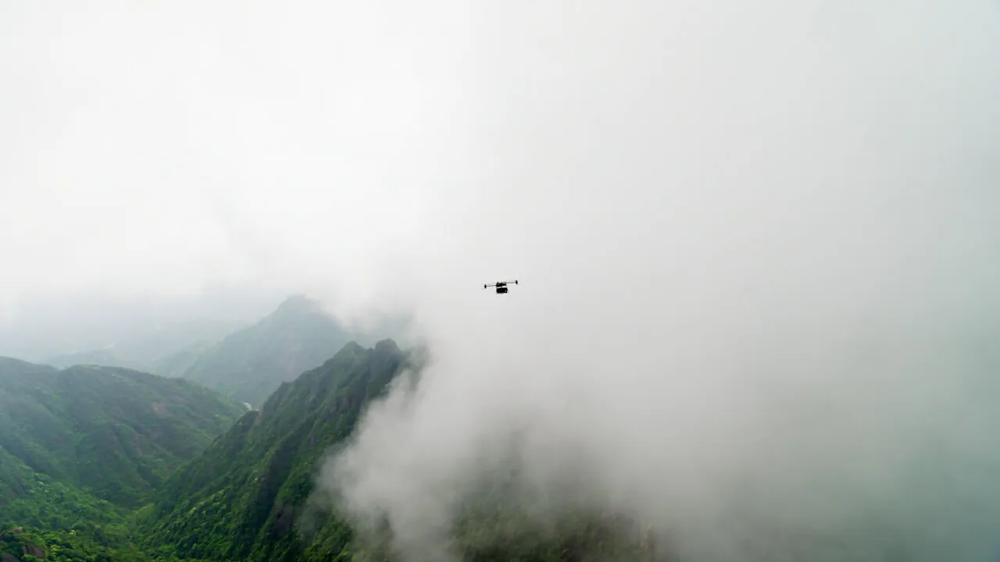
Туман, снег и распутица закрывают дорогу целыми днями.
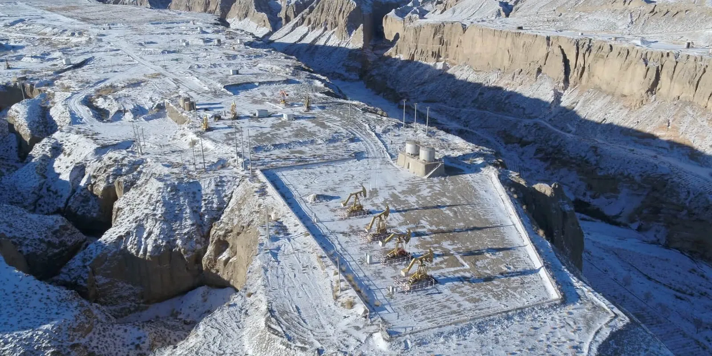
К объекту без дорог материалы возят вертолётом или вездеходом.
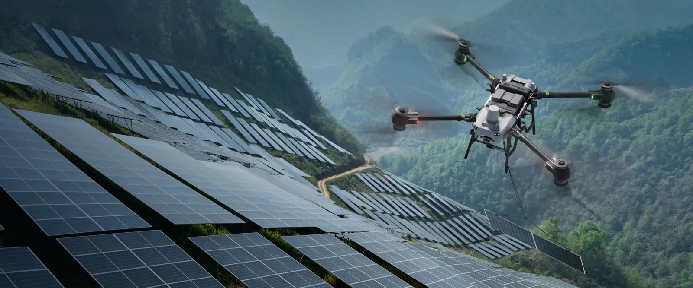
Отдельный рейс машины ради 20 кг груза — дорого и медленно.
Три уровня системы доставки
Дрон выполняет рейс, док-станция обслуживает его без человека, платформа планирует маршруты и ведёт учёт грузов. Три уровня поставляются и настраиваются как одно решение.
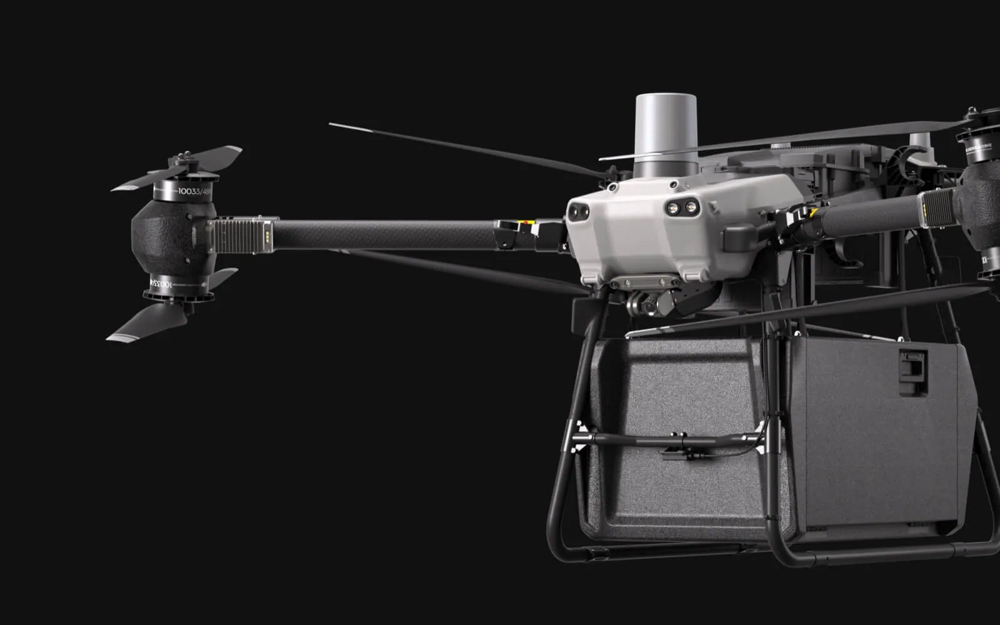
Грузовой БПЛА
До 30 кг полезной нагрузки, короб или лебёдка, работа в дождь и ветер.
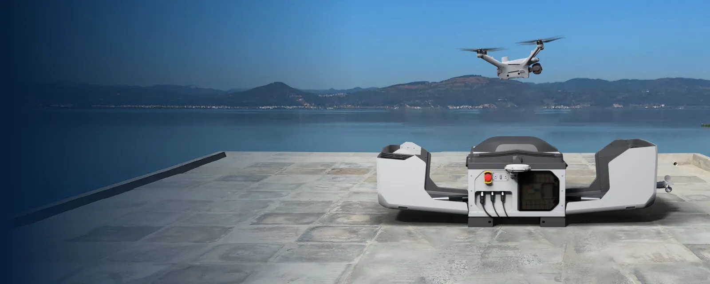
Док-станция
Автоматическая посадка, зарядка и подготовка к следующему рейсу без оператора.
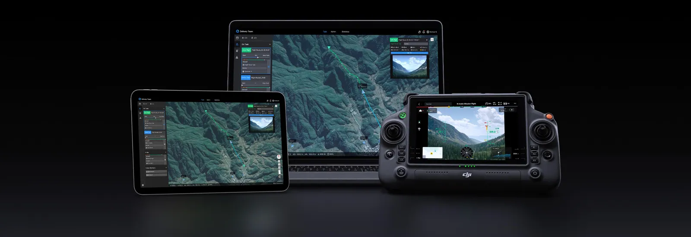
Платформа
Маршруты, диспетчеризация, статусы и отчёты по каждому рейсу.
Док-станции: рейсы
по расписанию 24/7
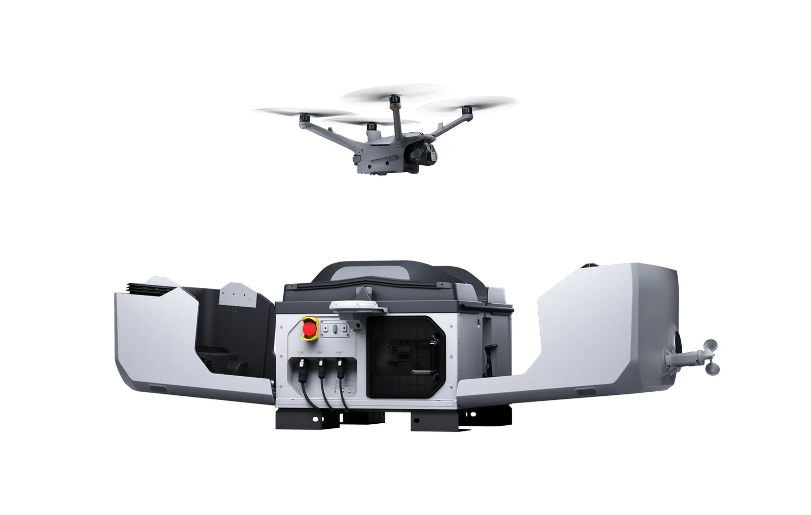
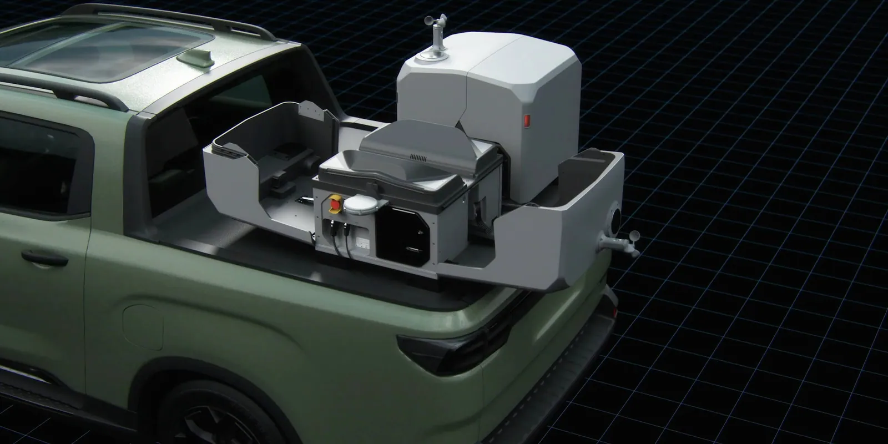
BVLOS-маршруты
и безопасность полёта
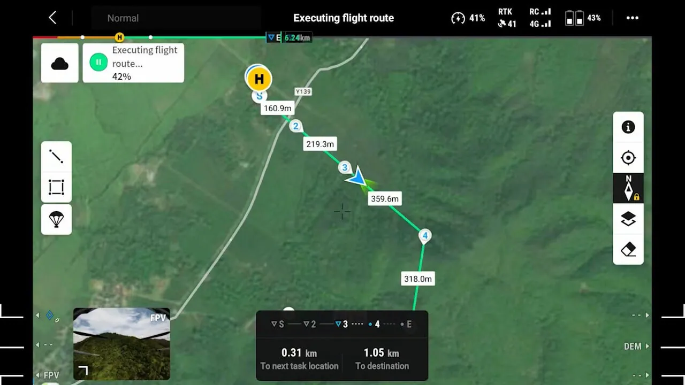
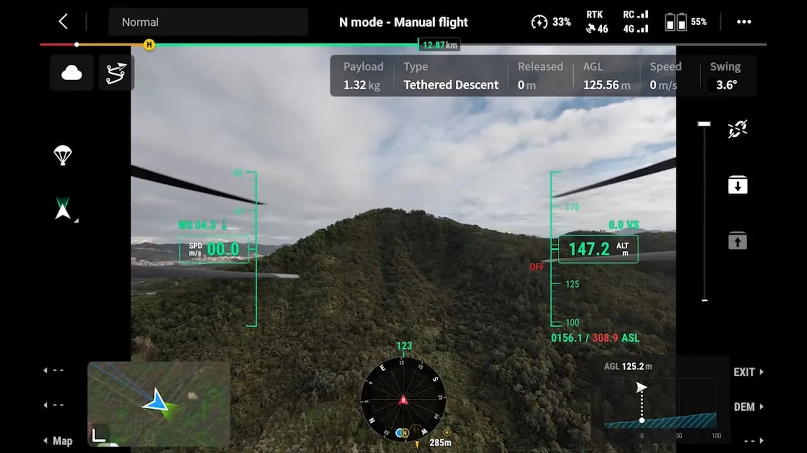
Fleet Management
и интеграция с ERP
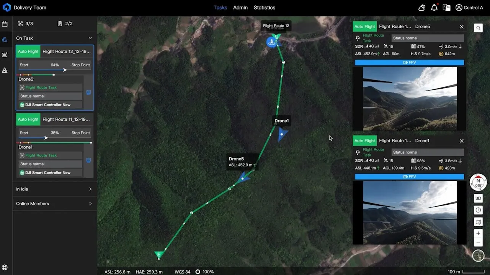
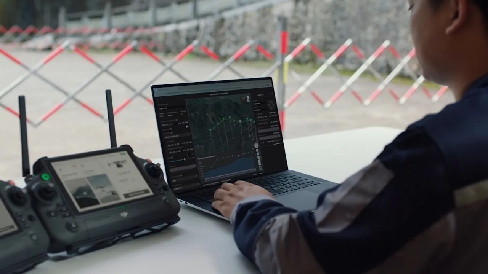
Где доставка дроном окупается первой
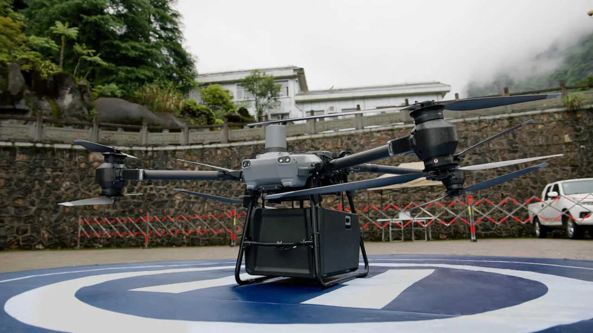
Стройка и промплощадки
Инструмент, запчасти и пробы бетона между участками — минуя пропускной режим и пробки.
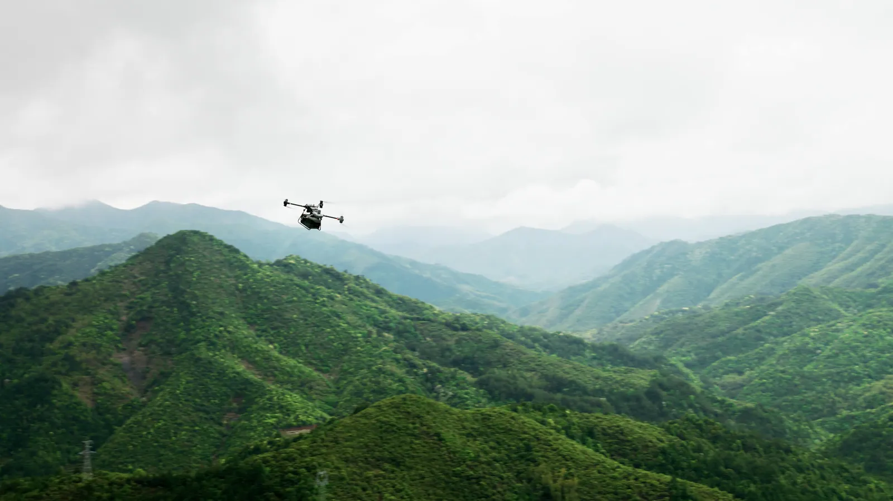
Медицина и удалённые посёлки
Анализы, вакцины и препараты в горные и отрезанные распутицей районы.
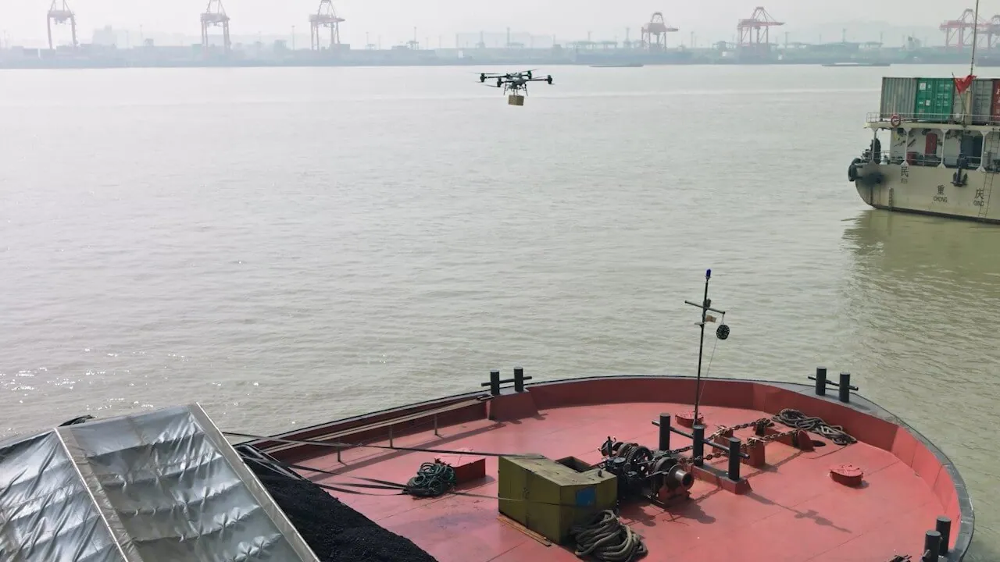
Порты и энергетика
Доставка на суда, буровые и подстанции без катера и спецтранспорта.
Экономика маршрута
Что меняется после запуска доставки дроном
Скорость доставки. Рейс по прямой вместо объезда по дорогам.
Стоимость рейса. Нет водителя, топлива и амортизации машины.
Доступность. Ночь, выходные и распутица не останавливают рейс.
Людей в опасной зоне. Груз идёт по воздуху, а не по горной дороге.
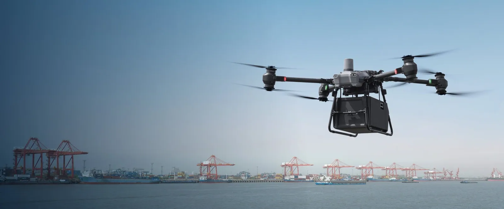